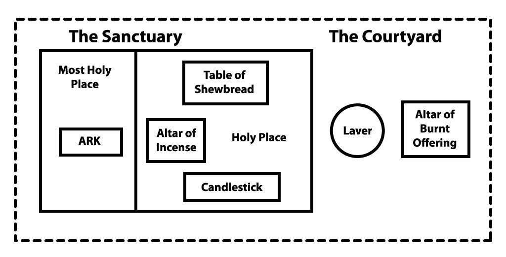

Revelation Unseals Daniel’s Prophecy
“And he said unto me, Unto two thousand and three hundred days; then shall the sanctuary be cleansed.” Daniel 8:14.
1. To what time did the 2300-day prophecy point? Daniel 8:17
Answer
The time of the end
“Behold, I will make thee know what shall be in the last end of the indignation: for at the time appointed the end shall be.” Daniel 8:19.
2. How long was the book of Daniel to be closed up? Daniel 12:9
Answer
Till the time of the end
3. Revelation pictures a mighty angel with what in his hand? Revelation 10:1, 2
Answer
A little book open
Revelation 10 makes unmistakable reference to the book of Daniel:
Daniel 12:5-7.
“Then I Daniel looked, and, behold, there stood other two, the one on this side of the bank of the river, and the other on that side of the bank of the river. And one said to the man clothed in linen, which was upon the waters of the river, How long shall it be to the end of these wonders? And I heard the man clothed in linen, which was upon the waters of the river, when he held up his right hand and his left hand unto heaven, and sware by him that liveth for ever that it shall be for a time, times, and an half; and when he shall have accomplished to scatter the power of the holy people, all these things shall be finished.”
Revelation 10:5 - 7.
“And the angel which I saw stand upon the sea and upon the earth lifted up his hand to heaven, and sware by him that liveth for ever and ever, who created heaven, and the things that therein are, and the earth, and the things that therein are, and the sea, and the things which are therein, that there should be time no longer: but in the days of the voice of the seventh angel, when he shall begin to sound, the mystery of God should be finished, as he hath declared to his servants the prophets.”
4. The mystery would soon be finished as God had declared to whom? Revelation 10:7
Answer
The prophets
5. Where were the angel’s feet? Revelation 10:2
Answer
His right foot upon the sea, and his left foot on the earth
“And God called the dry land Earth; and the gathering together of the waters called he Seas.” Genesis 1:10.
6. In Bible prophecy, what do waters symbolize? Revelation 17:15
Answer
Peoples, and multitudes, and nations, and tongues
“Upon the sea and upon the earth.” Revelation 10:5. The book of Daniel was to be opened in an area occupied by many nations, and also in a sparsely-populated land.
In 1800 Daniel was a closed book. In 1812 the study of prophecy began in England. It soon took hold throughout Europe, Asia, and Africa. Soon more than a hundred writers from a wide variety of denominations were interpreting Bible prophecy. Loosed by the hand of a prophetic clock, scores of men, representing over a dozen nations on four different continents, independently and simultaneously began predicting the fulfillment of the 2300-day prophecy.
In the United States, the most noted expositor of Daniel 8:14 was a Baptist, William Miller. He and 43 ministers of 13 denominations unleashed perhaps the greatest prophetic awakening in American history. By a thorough study of the 2300-day prophecy, they discovered that the 2300 days would expire on October 22, 1844.
7. When the book of Daniel was still in their mouths, what would it be like? Revelation 10:8 - 10
Answer
Sweet as honey
“Thy words were found, and I did eat them; and thy word was unto me the joy and rejoicing of mine heart.” Jeremiah 15:16.
“How sweet are thy words unto my taste! yea, sweeter than honey to my mouth!” Psalm 119:103.
8. But after it was swallowed, what would happen? Revelation 10:9, 10
Answer
It shall make thy belly bitter
It was commonly believed that the earth was the sanctuary to be cleansed, and that Jesus would come at the end of the 2300-day period. No message could have been sweeter. Many gladly gave up their jobs and spent their life’s savings to spread the wonderful news. But when the date passed by and Jesus did not return, they experienced the most bitter disappointment of their lives.
9. Those who had experienced the bitter disappointment were told they must do what again? Revelation 10:11
Answer
Prophesy again before many peoples, and nations, and tongues, and kings
10. What was to be measured? Revelation 11:1
Answer
The temple of God, and the altar, and them that worship therein
11. Where was the temple of God opened? Revelation 11:19
Answer
In heaven
12. What does the apostle call the temple of God in heaven? Hebrews 8:2
Answer
The sanctuary, and of the true tabernacle, which the Lord pitched
13. The earthly tabernacle, being true to its pattern, served as an example and shadow of what? Hebrews 8:5
Answer
Heavenly things
14. How is the heavenly tabernacle rated, compared to the earthly? Hebrews 9:11
Answer
Greater and more perfect
15. Who is the High Priest of the heavenly sanctuary? Hebrews 9:11
Answer
Christ
“Wherefore, holy brethren, partakers of the heavenly calling, consider the Apostle and High Priest of our profession, Christ Jesus.” Hebrews 3:1.
16. What two apartments of the earthly tabernacle did the veil divide? Exodus 26:33
Answer
The holy place and the most holy
17. What is another name for the most holy place? Hebrews 9:3
Answer
The Holiest of all
18. How often did the earthly high priest go into that apartment? Hebrews 9:7
Answer
Once every year
19. What was the purpose of the blood which he took in with him? Hebrews 9:7
Answer
Which he offered for himself, and for the errors of the people
The earthly Day of Atonement which occurred “once every year” is described in Leviticus 16. It symbolized the work Jesus would begin in the most holy place of the heavenly sanctuary in 1844.
20. What were all the people to do on that day? Leviticus 16:29
Answer
Ye shall afflict your souls, and do no work at all
To the Jews the Day of Atonement was a solemn day of judgment. The Jewish encyclopedia describes it as follows: “God, seated on His throne to judge the world . . . openeth the Book of Records; it is read, every man’s signature being found therein. The great trumpet is sounded; a still, small voice is heard; the angels shudder, saying, this is the day of judgment . . . . On the Day of Atonement it is sealed who shall live and who are to die.”
21. What would this atonement do for the people? Leviticus 16:30
Answer
To cleanse you, that ye may be clean from all your sins
22. What would this make for the holy sanctuary and for the tabernacle? Leviticus 16:33
Answer
An atonement
23. Why did the sanctuary need an atonement? Leviticus 16:16
Answer
Because of the uncleanness of the children of Israel
24. It was necessary also that the patterns and heavenly things themselves should be what? Hebrews 9:23
Answer
Purified
25. In one word, what was to be done to the sanctuary at the end of the “2300 days”? Daniel 8:14
Answer
Cleansed
For further study on this subject see These Last Days Information Booklet “D” entitled, The Gospel in the Old Testament.
In the Light of God's Word...
Additional comments:
Next Lesson: The Cleansing of the Sanctuary
The Gospel in the Old Testament and the End-Time Cleansing Work of Christ
These Last Days Information Booklet "D"
Information Booklet D
Supplement to Lesson 15
The Gospel in the Old Testament
At no time in the world’s history has anyone ever earned salvation by his own works. In both Old and New Testaments, people were saved by the grace of God and the merits of Jesus. The following texts make it clear that people who lived before the cross were saved on the same terms as were people in New Testament times
“I am not ashamed of the gospel of Christ: for it is the power of God unto salvation to every one that believeth; to the Jew first, and also to the Greek.” Romans 1:16.
“For unto us was the gospel preached, as well as unto them.” Hebrews 4:2.
“For by the works of the law shall no flesh be justified.” Galatians 2:16.
“Neither is there salvation in any other: for there is none other name under heaven given among men, whereby we must be saved.” Acts 4:12.
“But though we, or an angel from heaven, preach any other gospel unto you than that which we have preached unto you, let him be accursed.” Galatians 1:8.
The Old Testament itself teaches salvation through Christ. The “scriptures” spoken of in the following texts are the Old Testament. These texts make it clear that the Old Testament scriptures teach the same gospel of salvation through Christ that we find in the New Testament. “Christ died for our sins according to the scriptures.” 1 Corinthians 15:3.
“From a child thou hast known the holy scriptures, which are able to make thee wise unto salvation through faith which is in Christ Jesus.” 2 Timothy 3:15.
“Then he said unto them, ‘O fools, and slow of heart to believe all that the prophets have spoken: Ought not Christ to have suffered these things, and to enter into his glory?’ And beginning at Moses and all the prophets, he expounded unto them in all the scriptures the things concerning himself.” Luke 24:25 - 27.
“All scripture is given by inspiration of God, and is profitable for doctrine, for reproof, for correction, for instruction in righteousness.” 2 Timothy 3:16.
The Bible presents one gospel from Genesis to Revelation, one plan of salvation for humanity. The Bible calls it “the everlasting gospel” (Revelation 14:6), the “everlasting covenant” (Psalm 105:10; Hebrews 13:20).
How People Before the Cross Demonstrated Their Faith in Christ
The Bible says that we are saved by grace through faith. Faith, therefore, is the means by which we take hold of God’s grace.
Faith always exhibits itself in real and identifiable action. “I will shew thee my faith by my works.” James 2:18. Often the Lord has asked His people to express their faith through the performance of an action. Many of Christ’s miracles occurred in response to an act of faith.
This principle helps us to understand the purpose of the ceremonial ordinances of the Old Testament. Performing those ceremonies did not earn salvation for the Israelites, but served as the means whereby they were to demonstrate their faith in the Saviour who was to come.
Every sacrifice offered, every ordinance performed, was to be an expression of faith in Christ. “By faith Abel offered unto God a more excellent sacrifice.” Hebrews 11:4. “Through faith he [Moses] kept the passover, and the sprinkling of blood.” Hebrews 11:28.
The Significance of the Old Testament Sanctuary Services
Every element in the Old Testament ritual system was specifically designed by Christ to illustrate His own work in the plan of salvation. Every lamb that was slain prefigured Christ, the Lamb of God, who would be offered on the cross for the sins of the world. Everything the priests did pointed to Jesus, our great High Priest in the courts above. In fact, even the way the Sanctuary and its furniture was arranged was designed to illustrate the plan of salvation.
By just contemplating the meaning of the Sanctuary, its arrangement and the ceremonies performed, an Israelite could understand the entire gospel of salvation. So the gospel of Christ is clearly illustrated in the Old Testament, and it is definitely plainly proclaimed in the New Testament.
Since the plan of salvation is clearly seen connected in both the Old and the New Testaments, and since the ceremonial system centered around the sanctuary and its services, then it should not surprise us to find that every major scene in the book of Revelation is oriented with respect to the temple in heaven where Christ is ministering for us. The heavenly temple is specifically mentioned 14 times in Revelation (see 3:12; 7:15; 11:1, 2, 19; 14:15, 17; 15:5, 6, 8; 16:1, 17).
Revelation is full of sanctuary terminology. Twenty-eight times in Revelation Jesus is called the “Lamb”. References to sanctuary furniture such as the candlesticks, the altar of incense, and the ark of the testament are found throughout the book. Other references to the temple in heaven include Psalm 11:4; 18:6; Isaiah 6:1; Habakkuk 2:20; Malachi 3:1; and Hebrews 8 and 9.
The tabernacle on earth was patterned after the temple in heaven. It consisted of two apartments, the Holy Place and the Most Holy Place, and specific services were carried out in each of these apartments – especially in regards to the Most Holy Place and the day of Atonement.
Three Steps in the Atonement
By studying the plan of salvation as illustrated in the Old Testament sanctuary services, we may learn much about the great work of atonement. The word “atonement,” or at-one-ment, refers to the process whereby man is reconciled to God. A study of the sanctuary reveals three steps in the process: sacrifice, intercession, and cleansing.
Sacrifice
This step was symbolized in the Old Testament by the daily slaying of animals. A perfect lamb without blemish was required, and sacrificed in the courtyard. Every drop of blood that was shed in those rituals pointed to the sacrifice of Jesus for lost mankind. His death paid the full price for our redemption
Intercession
This step was symbolized by the daily duties performed by the priests in the holy place, or first apartment of the sanctuary. Incense was continually offered before God, mingled with the prayers of the saints. This represented Christ’s priestly intercession for His people which He began after His ascension to heaven. Through Christ’s first apartment ministry the sinner’s guilt is pardoned, and Christ’s righteousness is imparted to His people.
Cleansing
The third step was illustrated once each year in the Old Testament ceremonies. The tenth day of the seventh month was called the Day of Atonement. It was the day on which the sanctuary was cleansed. It was considered the most solemn and significant event of the year. On that day the whole congregation appeared before the Lord that they might be made “at one” with Him. Sins which had been brought to the sanctuary throughout the year were figuratively removed from it on that day. But those who failed to humble themselves before God were cut off from being considered the people of God.
On that day the high priest alone went past the inner veil into the Most Holy Place and appeared before God. With him he took the blood of a goat and a censer of coals from the altar of incense. This represented the final phase of Christ’s work in the Most Holy Place of the heavenly sanctuary, performed in “the time of the end” to atone for all confessed sins. The work of atonement is not complete until the sanctuary is thus cleansed.
Scripture references to the Old Testament Day of Atonement include Leviticus 16 and Leviticus 23:27-32. Information on the end-time cleansing of the sanctuary is found in Daniel 8:14; Malachi 3:1-5; and Hebrews 8 and 9.
Biblical Figures Which Illustrate Christ’s End-Time Cleansing Work
Lesson 16 covers the subject of Christ’s end-time cleansing work. But we would like to preview the subject briefly here. There are at least four different figures which are used in the Bible to illustrate the final, cleansing phase of Christ’s atoning ministry. They are summarized below.
1. The Day of Atonement
Since the Old Testament feasts such as Passover and Pentecost illustrated and pointed forward to events in Christ’s work of salvation, we should also expect the Day of Atonement to point to a significant aspect of Christ’s ministry. The Biblical description of the Day of Atonement presents it as a day of cleansing for the sanctuary and the people.
2. The Pre-Advent Judgment
A second figure used in the Bible to illustrate Christ’s end-time cleansing work is that of a preadvent judgment. That is, a judgment which Christ performs before He returns at His second coming. Lesson 16 presents the texts referring to this event, which is often called the Investigative Judgment. It involves an examination of the lives of all whose names have ever been entered into the book of life.
3. Preparations for a Wedding
Elsewhere in the Bible the cleansing phase of Christ’s ministry is compared to preparations made for a wedding. The wedding parables of Jesus in chapters 22 and 25 of Matthew speak of an essential preparation on the part of the those who are invited to the wedding feast. Symbolically we are each individually called to be guests at the wedding of Christ and His church. The marriage appears in Revelation 19:7-9 just before Christ comes back to earth to receive His bride. In Matthew 22:11 the king personally inspects each guest to make sure they are each wearing the wedding garment. Revelation 19:8 tells us that this white raiment is “the righteousness of saints.” Only those who by God’s grace overcome their sins (Revelation 3:5) are clothed in the required garment. This preparation and inspection of character before the wedding illustrates the end-time cleansing ministry of Christ.
4. Refining of Gold and Silver
A fourth Biblical description of Christ’s end-time cleansing work is found in Malachi 3 where the Lord comes to His temple and sits “as a refiner and purifier of silver: and he shall purify the sons of Levi, and purge them as gold and silver” (verse 3).
In the purification process of silver, the refiner works so that all the impurities and worthless dross are removed from the precious metal. To accomplish this he continues to raise the temperature of the fire in the melting pot, and as the silver melts, all the dross and impurities rise to the surface which are skimmed off and discarded. But if the refiner allows the temperature to get too hot, then the precious silver will be ruined. So what the refiner has to do is to keep a close watch on the surface of the silver. As soon as the silver takes on a mirrored appearance, and the refiner can see his face reflected back to him, then he immediately removes the heat because the silver has been thoroughly purged and purified.
It is very comforting and encouraging to know that Jesus – our Refiner – not only examines our lives, but also works to purge, refine and cleanse us from all our sins and imperfections. He will not allow any trial to overwhelm us, nor will He needlessly keep the fires of purification on us for too long, because He loves us and wants us to be saved, not lost. And He, along with all of heaven, will continue working for and with us towards perfectly reflecting His righteous character. Thus the strongest influences of heaven are working to help you and me to separate ourselves from sin’s destroying hold.
So God is on our side. He wants us to obtain the victory. It has been said that there are three votes which determine each person’s eternal destiny. Satan always votes against you. God always votes for you. The deciding vote is left to you.
Where We Stand Today
We now live in the period of Christ’s ministry which the Bible depicts in the above four ways. The cleansing of the sanctuary is going on today. It began, according to prophecy, at the end of the “2300 days” of Daniel 8:14. The first “seventy weeks” of that prophecy pointed to the time of Christ’s sacrifice on Calvary. The remaining 1810 years of the prophecy point to the time when the cleansing of the sanctuary would commence: the autumn of 1844 (see lesson 14).
How We Arrive at the Date, October 22, 1844
We have noted that every ceremony which God gave to Israel had significance in illustrating some aspect of Christ’s ministry. The first-month feasts, also known as spring festivals (Passover, the Feast of Unleavened Bread, the Wavesheaf Offering, and Pentecost), all pointed to events connected with Christ’s sacrifice and intercessory ministry. The seventh-month feasts, or autumn festivals (Trumpets, the Day of Atonement, and the Feast of Tabernacles), pointed to events connected with the final phase of the atonement and the eradicating of sin from the universe.
Christ’s fulfillment of the events to which each of the spring festivals pointed took place on the very date of the corresponding ceremonial service in the Jewish calendar. In other words, He actually died on Passover day, was raised on the day of the wave sheaf offering, and the Holy Spirit was poured out on the day of Pentecost. We therefore know that He would begin the work to which the Day of Atonement pointed on that date of the Jewish calendar in 1844, which was October 22.
The Misunderstanding in 1844
The disappointed expectations for Christ’s return in 1844 were the result of a misunderstanding as to which sanctuary was to be cleansed. But before we criticize those believers we need to remember that the prophet Daniel misunderstood the same thing. Daniel received the vision of the 2300-day prophecy in 551 B.C. But Gabriel did not provide a full explanation of the prophecy until the first year of Darius the son of Ahasuerus, which was 538 B.C. Chapter nine reveals that during those 13 years Daniel held a misunderstanding as to which sanctuary was to be cleansed. His concern was for the temple in Jerusalem which he hoped would soon be restored. He certainly did not want to see it lay in ruins for 2300 years. That was the reason for his great anxiety and earnest prayer.
William Miller began preaching on the 2300-day prophecy in the year 1831. Until 1844 people incorrectly assumed that the sanctuary to be cleansed was the earth. Just like Daniel, for 13 years they misunderstood which sanctuary was to be cleansed!
Because God may withhold the full light of truth from His people for a time does not mean that He is not leading them. He has a reason for all that He does, and He unfolds His secrets as He sees best. Our duty is to walk in the light as He reveals it, and He will guide us into all truth.
The Close of Probation
The wedding parable in Matthew 25 indicates that salvation is offered for a limited time only. In the parable, those who were prepared for the bridegroom “went in with him to the marriage: and the door was shut.” After the door was shut no one else who sought entrance was allowed in. They were too late.
Jesus compared His coming to the days of Noah. For 120 years people had opportunity to respond to Noah’s invitation. But once the door was shut, no one else could enter.
Jesus is now inviting all who will respond, to allow Him to cleanse them from sin. He is now pleading the merits of His own sacrifice on behalf of all who will choose it. But when His ministry in the heavenly sanctuary is finished and everyone on earth has either cooperated with or rejected His atoning work, He will then leave the sanctuary. His work of intercession ceases. Those who during the time of probation have made an entire consecration of their lives to Him are at that time sealed from the power of Satan. They will sin no more. But those who spurned God’s grace while Jesus pleaded, will find no mediator when probation ends. They had chosen to retain their sins, and their decision cannot be reversed.
Revelation 15:5-8 describes the scene after Jesus leaves the temple. The sanctuary is empty; its activities have ended. The wrath of God is now poured out upon the unrepentant. The plagues which then will fall upon the world are described in Revelation 16.
But those who had made the Lord their refuge will have His protection during the time of trouble (see Isaiah 4:4-6; 26:20; and 33:16). The beautiful ninety-first Psalm also describes the protection to be enjoyed by the righteous during that time. Take time to read and memorize these passages so they will be in your heart to strengthen and encourage you in the days ahead.